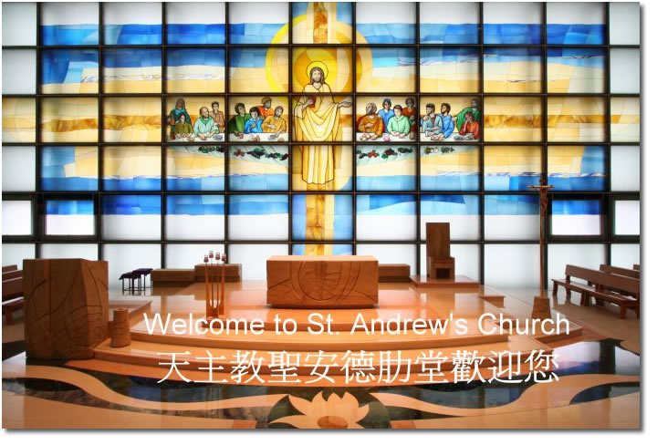

首頁
牧職小組
堂區資料
堂區介紹
堂區歷史
堂區主保
善會組織
堂區設計
堂區活動
堂區訊息
婚配禮儀
慕道班
主日學
網站連結
檢視較大的地圖
檢視較大的地圖

1.
6月堂區快訊
2.
2012年牧民計劃
3.
2012年聖安德肋堂(婚配綵排會)
聖安德肋堂
主日：
上午7時30分，9時，10時30分，12時，下午6時
提前主日：
星期六下午6時
平日：
星期一至五上午7時30分
明供聖體：
每月第一個星期四晚上8時正
聖雲先堂
主日：
上午8時30分(英語)，10時30分(英語)